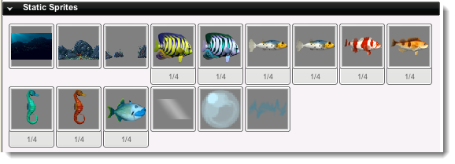
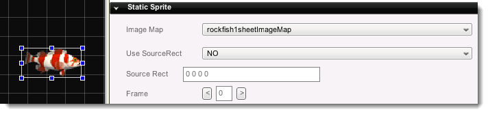

Introduction
Static sprites (t2dStaticSprite) represent the bulk of objects that
you will most likely place in your Scenes. A static sprite object is a
single, non-animating image, used for anything from background detail to
collectible objects to giant missiles fired from a tank. This is a
quick reference for a static sprite. To view a short tutorial,
click
here.
Creation
Creating a static sprite object requires that you already have set up
an imagemap in your Project. Once you have done that, you will have a
collection of static sprites under the Create tab.

These static sprites can easily be added to your scene by clicking on
one, then dragging and dropping it into your Scene. Once you have
dropped it, click on the Edit Tab to adjust its Properties.

Properties
- Image Map - The image to display on this sprite.
- Use Source Rect - Enable using the SourceRect rendering on this sprite.
- Source Rect - Defines the source rect in four components (topLeft, topRight, width, height) ie: 10 10 100 100
- Frame - The image map frame to display. (This property
is only available if the static sprite placed from the Create Tab has
more than 1 Sprite within it.)
Script Representation
new t2dStaticSprite() {
imageMap = "rocksnearImageMap";
frame = "0";
mUseSourceRect = "0";
sourceRect = "0 0 0 0";
canSaveDynamicFields = "1";
size = "480.000 320.000";
Layer = "3";
CollisionMaxIterations = "3";
AlphaTestValue = "-1";
mountID = "2";
};
Conclusion
Static sprite objects are the single most-used object in Torque 2D.
Having a solid understanding of them is important, and thanks to having
read this Quick Reference guide, you should now have a decent idea of
how they function, and how to create them. To view a short tutorial,
click
here. |